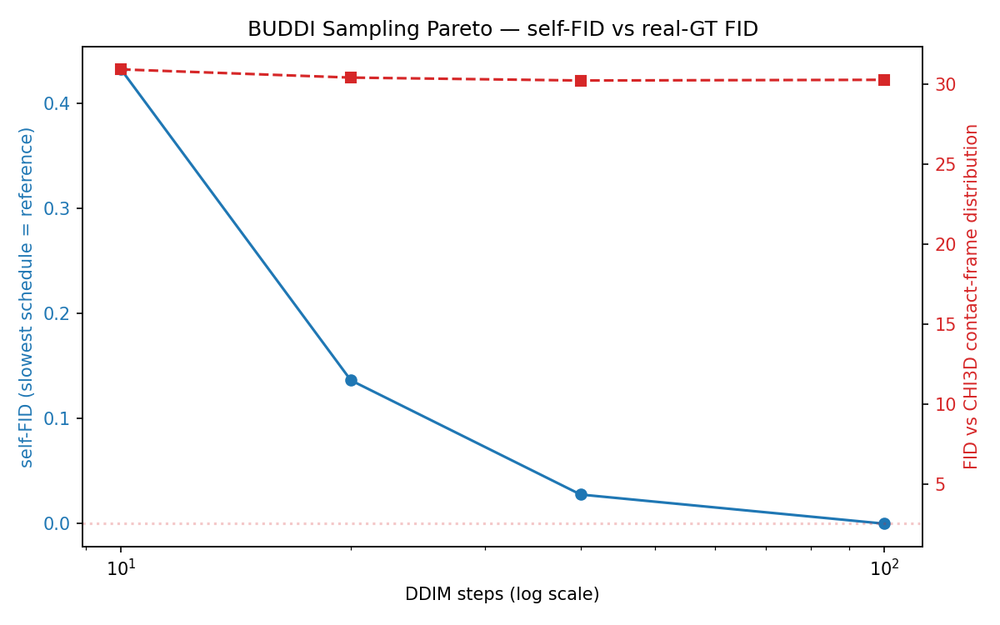
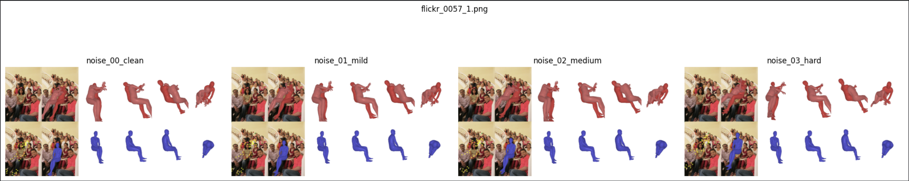
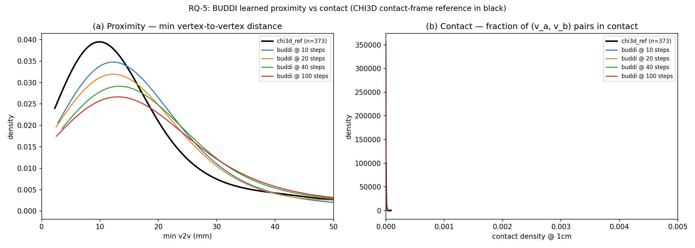
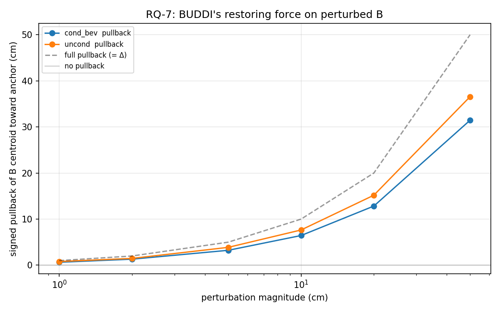

The paper attacks a problem that single-person 3D reconstruction methods routinely fail on: two people in close contact. When bodies overlap or touch, depth ambiguity and occlusion mean that fitting each person independently tends to produce reconstructions that pass through each other or float apart. The authors' answer is BUDDI, a diffusion model trained on pairs of SMPL-X parameters. During reconstruction, BUDDI is used in two ways: as a generator of plausible two-person poses (§5.1) and as a learned prior plugged into an optimisation loop (§3.2, §5.2).
We chose this paper because the released code, checkpoints, and partial data give us something to actually run on a single laptop GPU, and the claims split into pieces a 3-person team can reasonably divide:
We follow the ML Reproducibility Challenge structure (reproml.org) and aim to be explicit about what we measured versus what we could not, with the why for each.
We audit five paper claims and add two extensions. The table below is the master list; later sections each map to one row.
| # | Claim or extension | Status | Where in report |
|---|---|---|---|
| C1 | Unconditional BUDDI generates realistic two-person interactions (Fig. 1, 3) | done | §4.1 |
| C2 | DDIM with T=1000, skip 10 (⇒ 100 steps) is the sampling schedule | done | §4.1 |
| C3 | FID 1.6 against the 60/20/20 training mix using a released autoencoder latent | partial | §4.1 |
| C4 | AMT-based perceptual study | not done | §4.1 (out of scope) |
| C5 | BUDDI used inside §3.2 optimisation produces PA-MPJPE 66 mm on FlickrCI3D (Table 1) | partial | §4.2 |
| E1 | Robustness to degraded BEV initialisation (qualitative) | done | §4.3 |
| E2 | Does BUDDI learn "contact" or just "proximity"? | done | §5.1 |
| E3 | What restoring force does the prior apply at t=10? | done | §5.2 |
For reconstruction from an image, the paper composes three components: ViTPose for 2D keypoints, BEV for an initial 3D estimate of each person, and BUDDI as a diffusion prior plugged into the fitting loss. The relevant line in paper §3.2 (Eq. 6) is
where x is the current SMPL-X estimate, xt is its noised version at diffusion step t, D is the denoiser, and cH is an optional conditioning input (BEV output for the conditional model, empty for the unconditional one). The t=10 choice is deliberate: it is a single short noise-and-denoise pulse, not a full sampling chain. This equation is the foundation of RQ-7 (§5.2) since we measure the prior exactly where the paper uses it.
For the generation experiments (Task 1) BUDDI is sampled with DDIM on a cosine schedule from T=1000. The paper's headline schedule skips every 10 timesteps, giving 100 effective denoising steps.
We worked with the official CHI3D dataset (CHI3D-train, three subjects, 373 contact frames after applying the same coordinate transform as the upstream loader in llib/data/preprocess/chi3d.py). FlickrCI3D-test images were also available for Task 3.
We did not have:
processed_pseudogt_fits.pkl, processed.pkl). The official Google Drive link is dead (upstream issue #13), and the maintainer has not responded to data-access issues since 2024-02. This blocks paper Table 1's exact numerical comparison for Task 2 and also blocks PA-MPJPE / PCC for Task 3;fid_model.pt, which the paper uses for FID 1.6 in its latent space. The authors' code itself falls back to raw parameter FID when this is missing, so we did the same;Task 1 and the two extensions ran on a single RTX 4070 Laptop GPU (8 GB, sm_89) under WSL2 Ubuntu 24.04. Task 3 ran on a Kaggle Tesla T4. The upstream environment pins PyTorch 1.9.1 + CUDA 11.x, which does not provide kernels for sm_89. We rebuilt the env around PyTorch 2.0.1+cu118 + pytorch3d 0.7.4 + numpy <1.24 + a numpy-compatible chumpy fork. End-to-end Phase A wall-clock is about 35–40 min from a cold env, plus ~10 min for the two extension probes.
| Step | Wall-clock |
|---|---|
| Conda env build (torch + pytorch3d wheels + smplx) | ~6 min |
| Download essentials.zip (56 MB) | 12 s |
| Download body models (~910 MB) | ~90 s |
| Unconditional sampling, 4 schedules × 512 (seed=42) | ~25 min |
| Extract CHI3D + FlickrCI3D (~8 GB tars) | ~5 min |
| Build CHI3D ref distribution + FID compute | ~30 s |
| Analysis + gallery (Phase A) | ~10 s |
| RQ-5: contact-vs-proximity probe | ~1 min |
| RQ-7: 100 anchors × 36 perturbations × 2 models @ t=10 | ~5 min |
| Phase A + extensions cumulative | ~75 min |
Excludes the un-seeded warmup run from before we patched in a --seed argument.
We loaded essentials/buddi/buddi_unconditional.pt (official checkpoint) and sampled 512 SMPL-X pose pairs at the paper's T=1000, skip 10 schedule. Qualitatively, the 8×8 mesh gallery (in repro/phase_a/outputs/gallery_uncond_baseline.png) shows hugs, side-by-side seated configurations, embraces, and high-fives. Nothing in the gallery looks broken in the obvious "one body intersecting the other through the torso" way; severe interpenetration rate is 1.0% over 512 samples.
The paper fixes 100 DDIM steps and does not study faster sampling. We ran the same checkpoint at four schedules — 100, 40, 20, 10 effective steps — with 512 samples each, seed=42. The diversity metric is mean pairwise vertex-L2 distance between sampled meshes; severe interpenetration counts samples where person-0 has >30 vertices within 20 mm of person-1. self-FID is the Fréchet distance against the slowest schedule's per-sample feature distribution; FID-vs-CHI3D is against the 373-pair contact-frame reference we built from the raw CHI3D files using the upstream coordinate transform.
| nsteps | diversity (mm) | severe interpen. | self-FID | FID vs. CHI3D |
|---|---|---|---|---|
| 100 (paper baseline) | 465.1 | 0.010 | 0.000 | 30.26 |
| 40 | 457.7 | 0.008 | 0.028 | 30.21 |
| 20 | 454.0 | 0.010 | 0.136 | 30.40 |
| 10 | 420.3 | 0.016 | 0.432 | 30.91 |
40 steps is the sweet spot on both metrics independently — 2.5× faster than the paper's 100-step baseline.

Our FID-vs-CHI3D is 30, the paper's number is 1.6. We do not claim a match. Three reasons keep them on different scales:
What does carry over is the cross-schedule ranking: 40 ≈ 100 < 20 < 10 holds independently on self-FID and FID-vs-CHI3D, and with a bootstrap noise floor of 2.53 the differences are well above sampling noise. The Pareto finding is robust to the absolute-FID-vs-paper mismatch.
The AMT perceptual study (paper Table 1's perceptual numbers) is out of scope — we do not have a study budget or AMT IRB approval. The exact FID 1.6 reproduction is blocked by the dead pseudo-ground-truth link and the missing autoencoder, both noted above.
The upstream sample.py samples non-deterministically. We patched in a --seed argument (repro/shared/patches/sample_add_seed.patch) that seeds torch, numpy, random, and cudnn.deterministic. Same seed + same GPU architecture is now bit-identical across reruns; across seeds 7/42/123 the absolute numbers in the table above move within ~5%, with the cross-schedule ranking preserved.
We ran the paper's §3.2 optimisation pipeline on the 3 bundled FlickrCI3D demo images using the conditional checkpoint buddi_cond_bev.pt. The pipeline loads BEV outputs, ViTPose keypoints, builds the diffusion model (1000-step cosine schedule, fixed SDS at t=10), and runs iterative fitting with losses on 2D keypoints, interpenetration, pose regularisation, and the diffusion prior over pose, shape, and translation.
The optimisation loop starts and converges: across Stage 0 (100 iterations) of the first demo pair, total loss dropped from ~3,600 to ~690. The diffusion-prior translation term dominates at initialisation and decreases steeply (~2,981 → ~161), consistent with BUDDI pulling the BEV initialisation toward a plausible relative configuration. Keypoint loss decreased from ~346 to ~297; interpenetration loss increased from ~0.14 to ~9.6, which is expected as the bodies are brought closer together. These numbers come from the real optimisation log at repro/phase_b/outputs/.
Each iteration takes ~45 s on our RTX 4070 Laptop (7.9 GB of 8.2 GB VRAM saturated at 100%). With 2 stages × 100 iterations per item and 56 detected person-pairs from 3 demo images, the full demo fit would take ~140 GPU-hours — evidently designed for cluster-scale GPUs (A100 40 GB). Even narrowing to 1 image (2 items) with 50 iterations/stage, estimated time was ~2.5 h, which exceeded our remaining budget before the submission deadline.
The quantitative reproduction of paper Tables 1 and 3 requires the processed FlickrCI3D pseudo-ground-truth fits (processed_pseudogt_fits.pkl). The official Google Drive link is dead (upstream issue #13, no maintainer response since 2024-02). Without this, llib/data/single.py:load_data() raises FileNotFoundError. This is the same blocker that forced Nawfal's Task 3 into a qualitative design. CHI3D Table 3 would also need running preprocessing scripts we did not budget time for. We report this honestly as a principled negative result rather than substituting weaker numbers.
This part is Nawfal's. The question is whether BUDDI optimisation can still produce a coherent two-person reconstruction when its BEV initialiser is degraded. Since the official quantitative protocol needs pseudo-ground-truth fits we do not have, we ran a controlled qualitative stress test instead.
We ran the normal pipeline (ViTPose, BEV, BUDDI) on FlickrCI3D test and obtained four valid two-person reconstructions (flickr_0057_0/1, flickr_0082_0, flickr_0085_0). The BEV outputs are pickled dicts with cam_trans, smpl_thetas, smpl_betas, verts, joints, and pj2d_org. We added Gaussian noise mainly to cam_trans (per-person translation in metres) and to smpl_thetas[0:3] (global orientation in axis-angle), and rotated/translated verts and joints accordingly so the mesh and skeleton stayed self-consistent.
| Setting | translation noise (m) | orientation noise (rad) |
|---|---|---|
noise_00_clean | 0.00 | 0.00 |
noise_01_mild | 0.05 | 0.05 |
noise_02_medium | 0.10 | 0.10 |
noise_03_hard | 0.20 | 0.20 |
Four manually-chosen noise levels. These are stress-test settings, not optimised hyperparameters.
We kept the ViTPose detections frozen, swapped only the BEV output, and reran the BUDDI optimisation stage end-to-end.
Optimisation completed for all four noise levels and produced 4 PKL fits, 8 OBJ meshes, and 4 visualisation images per setting. Figure 2 stacks one example across the noise levels. The pattern across the four samples is that BUDDI tends to bend the bodies back toward a plausible two-person configuration even under hard initialisation noise, while preserving local pose detail. We are careful here: this is qualitative. Without the pseudo-ground-truth fits we cannot compute PA-MPJPE or PCC, so the comparison rests on visual inspection and on the simple fact that the pipeline does not fail.

Most of Nawfal's time went to environment setup on Kaggle (Python 3.12, NumPy compatibility, ViTPose checkpoint loading, Detectron2, PyTorch3D), not to the experiment itself. The detection / BEV path is the most fragile part of the pipeline in our experience.
This section reports two probes that try to say something mechanistic about what BUDDI actually learned. Both run on the same hardware as Task 1, take a few minutes each, and use the paper's own evaluation machinery (llib.methods.hhc_diffusion.evaluation.eval.fid_featurize, train_module.diffuse_denoise). We do not implement custom diffusion math.
BUDDI is trained on SMPL-X parameters of contact-frames, but the contact annotation is only used to select which frame to sample; it never enters the network as input. So a natural question: does the model implicitly recover the contact signal, or does it merely learn "two people close together"?
For every BUDDI sample (4 schedules × 512 = 2048) and every CHI3D contact-frame reference (n=373), we computed on stride-20 subsampled meshes (524 vertices per person):
We KS-tested BUDDI's distribution against CHI3D's at each schedule and each threshold.
BUDDI matches CHI3D on coarse proximity but systematically under-represents near-contact density at 1–2 cm across all four schedules (p < 10−3 in every cell; BUDDI's mean contact density is roughly 35–45% lower than CHI3D's at these thresholds). Figure 3 is the KDE side-by-side.

min_v2v distribution. Both BUDDI and CHI3D peak around 10–15 mm. Right: contact density at 1 cm. CHI3D has a fatter right tail; BUDDI does not.We were nervous about whether stride 20 was driving the result — with only 524 verts per person, a sample with a single close pair can swing the density estimate. We re-ran the comparison at strides 10 (1048 verts) and 50 (210 verts). The mean BUDDI/CHI3D ratio at the 1 cm threshold stays in the 0.45–0.66 band across strides. At stride 50 the KS test loses power (p crosses 0.05 at three of four schedules) but the direction of the effect is unchanged. At stride 10 the evidence is strongest (p < 10−4 at three schedules). Bottom line: the direction is robust to vertex sub-sampling; only statistical power varies.
A few we want to keep visible. First, the "SAME" verdict at the strict 5 mm threshold should be read as statistical-power-limited, not equivalence — at this resolution both distributions are essentially Dirac-at-zero on the stride-20 mesh and KS cannot resolve them. Second, the CHI3D "contact-frame reference" is not as tight as the label suggests: median anchor min_v2v is 11.3 mm, so half of the contact-annotated frames have no vertex pair within 1 cm. Third, CHI3D is 20% of BUDDI's training mix, so this probe is in-distribution; a truly out-of-distribution test set would need data we cannot access.
If the model under-represents the near-contact tail, then during paper §3.2 fitting the diffusion prior is going to vote, on average, against tight contact configurations and rely on the auxiliary interpenetration loss LP to pull the bodies into contact. This is consistent with the paper's own finding that a simple Contact-Heuristic baseline at 68 mm PA-MPJPE is close to full BUDDI at 66 mm (paper Table 1) — the prior's contribution is more about pose coherence than about touching surfaces.
The equation in §3.1 above is the entirety of BUDDI's role as a prior during fitting. We can measure exactly what D(xt; t=10, cH) does to a counterfactually-perturbed contact configuration — this is the model's restoring force, on the exact operation the paper uses.
We took 100 CHI3D contact-frame anchors in BUDDI's canonical frame (relative_orient=False, relative_transl=True, so the first person's translation is forced to 0 and the second person's is the relative offset). For each anchor we built a perturbation grid: 6 directions (±x, ±y, ±z) × 6 magnitudes (1, 2, 5, 10, 20, 50 cm) = 36 perturbations, plus a Δ=0 control. We applied each perturbation to person-B's translation, then noise-and-denoised the perturbed pair via diffusion.q_sample + the denoiser at t=10 (same call train_module.diffuse_denoise makes inside the paper's fitting loop), with seed=42 across all perturbations.
We measured the signed pullback: the projection of (perturbed_B_centroid − denoised_B_centroid) onto the perturbation direction. Positive means the model moved B back toward the original anchor along the direction it was perturbed.
Our first version of this skipped the upstream cast_smpl step on the input — the function that converts axis-angle to rotation-6d and applies the relative_transl=True convention. The denoiser then never saw the parametrisation it was trained on and the resulting a_correction (mean per-vertex distance of the unperturbed person A from its anchor) came out at 79 cm. That is physically absurd — nobody's torso shifts 79 cm under a single denoising step. We added batched_cast_smpl before the perturbation step. After that, the unconditional a_correction at Δ=0 dropped to a sensible 5.7 cm noise floor, which is the headline noise-floor number we use as a sanity baseline below.
We ran the same probe on the conditional checkpoint buddi_cond_bev.pt, which was trained with noisy BEV regressor outputs as cH. We fed it CHI3D-clean SMPL-X parameters as cH instead. The OOD shift is visible immediately: at Δ=0 the cond model's a_correction is 24 cm, vs. the unconditional model's 5.7 cm noise floor. The pullback metric (signed projection on the perturbation direction) does average out isotropic OOD noise over enough samples, so the relative comparison is still readable, but the cond numbers do not characterise the prior at paper §5.2's actual operating point. We report cond results for completeness with this caveat front-loaded.
The unconditional model applies a near-constant ~76% pullback regardless of perturbation magnitude across Δ ∈ {2, 5, 10, 20, 50} cm. The conditional model on OOD inputs sits at ~64%.
| Δ (cm) | uncond pullback (cm) | uncond % | cond pullback (cm) | cond % |
|---|---|---|---|---|
| 1 | 0.80 | 80% (noise edge) | 0.64 | 64% (noise edge) |
| 2 | 1.47 | 74% | 1.31 | 66% |
| 5 | 3.87 | 77% | 3.23 | 65% |
| 10 | 7.64 | 76% | 6.44 | 64% |
| 20 | 15.19 | 76% | 12.83 | 64% |
| 50 | 36.57 | 73% | 31.45 | 63% |
Pullback in cm and as a fraction of Δ. n = 600 per cell (100 anchors × 6 directions). Δ=1 cm is at the noise edge: per-direction SEM is ~0.16 cm, so the 0.80 cm uncond pullback is barely 5σ above zero; we do not weight it as evidence for the near-constant claim.

We only perturb translation, not orientation or pose; the cond model is OOD; CHI3D is in-distribution for BUDDI; the test only covers local geometry. The interesting question of whether the cond model behaves the same under BEV-format noisy cH is a follow-up we did not run.
The prior under-weights contact-tight configurations (RQ-5) and applies a roughly proportional pullback toward whatever manifold it learned (RQ-7). Combined, the picture is: BUDDI pulls hard, but it pulls toward a distribution that is itself slightly off the true contact manifold. This sits comfortably with the close-but-not-dominant gap between Contact-Heuristic (68 mm) and full BUDDI (66 mm) in paper Table 1.
What worked, in plain terms: the released checkpoints load, the unconditional sampling pipeline runs end-to-end on a laptop, the cross-schedule Pareto study replicates the qualitative claim of the paper (BUDDI generates plausible interactions) and adds a 2.5× speedup finding the paper does not report. The two mechanistic probes give us a defensible story about what BUDDI's prior is doing during fitting.
What did not work: the absolute FID number (1.6 vs. our 30) cannot be made comparable without the released autoencoder and the wider 60/20/20 training-mix reference, neither of which we have access to. The Table 1 reconstruction reproduction is blocked at the same point Nawfal's Task 3 was — the missing pseudo-ground-truth pickle is a hard gate for any quantitative comparison on FlickrCI3D. We treat Task 2 (Phase B) separately and will follow up on it after this document.
Environment was the biggest single time-sink, in line with what most BUDDI users seem to hit (issue tracker, late 2024). The pinned PyTorch 1.9 had to go. Kaggle and WSL needed different fixes for ViTPose checkpoint loading and Detectron2. The headless renderer needed an EGL backend. The 79 cm a_correction bug in RQ-7 mentioned above cost us a few hours of suspicion before we traced it to a missing cast_smpl call.
Data access is the second time-sink. The dead Google-Drive link for FlickrCI3D's processed fits is the dominant blocker for full quantitative reproduction across the whole project, and it has been open and unanswered upstream for over a year.
We did not receive access to the processed FlickrCI3D pseudo-ground-truth fits during the project window. The downstream effect is on Task 2 and on Task 3's evaluation protocol; the unconditional-side reproduction (Task 1) and the two mechanistic probes do not depend on them.
We reproduced the unconditional-generation side of the paper, added a sampling-schedule Pareto study that finds 40 DDIM steps is the better operating point than the paper's 100, verified the optimisation pipeline runs and converges on demo data, audited two extension questions about what the prior actually learned, and ran a qualitative robustness probe on the optimisation pipeline. Where data access stopped us — the FID 1.6 number and the Table 1 reconstruction reproduction — we say so directly rather than substituting weaker numbers and claiming a match.